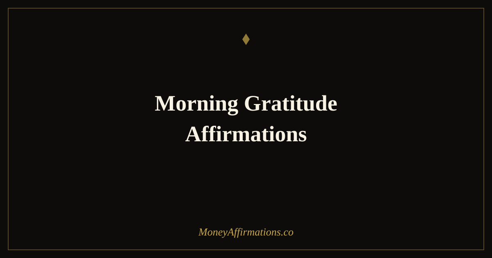

Morning Gratitude Affirmations: 30 Statements to Start Your Day Right

The first few minutes of the morning are uniquely powerful. The mind is transitioning from sleep — open, receptive, and not yet occupied by the noise and demands of the day. What you choose to place into that window shapes the psychological tone for everything that follows. Morning gratitude affirmations combine two of the most effective practices available to someone building a healthy financial mindset: gratitude, which opens the brain to abundance; and affirmation, which plants specific beliefs into that open state.
These 30 morning gratitude affirmations are designed to do exactly that — to open your day with a genuine orientation toward abundance and appreciation, while simultaneously reinforcing the beliefs about money and prosperity that your financial life requires. Used consistently, they change not just how you feel in the morning but how you think about, respond to, and attract money throughout the entire day.
What are morning gratitude affirmations?
Morning gratitude affirmations are present-tense statements that combine the energy of genuine appreciation with intentional belief-building about financial abundance. They differ from standard affirmations by beginning from a place of thankfulness for what already exists before reaching toward what is being built. This sequence — gratitude first, then aspiration — is more neurologically effective than aspiration alone, because gratitude reduces the psychological resistance that can make ambitious affirmations feel hollow or unbelievable.
For financial mindset work, the morning window is the highest-leverage time available. The beliefs you reinforce before the day begins are the ones most likely to shape your financial decisions, your openness to opportunity, and your responses to money-related stress. The prosperity affirmations collection provides the broader foundation that these morning statements build upon.
30 morning gratitude affirmations
- I am grateful for the money I have and I welcome more of it into my life today.
- I wake up thankful for the financial blessings already present in my life, and I expect more.
- I am grateful for the opportunities this day holds and I am ready to receive every one of them.
- My heart is open with gratitude and my hands are open to receive abundance in all its forms.
- I am thankful for my ability to earn, save, and grow my wealth steadily every day.
- Gratitude flows through me this morning and it clears the path for prosperity to follow.
- I am grateful for every resource, skill, and relationship that supports my financial growth.
- This morning I choose abundance — in my thoughts, my words, and my first actions of the day.
- I am thankful for the financial progress I have already made and excited by how much further I will go.
- Gratitude is my opening prayer and abundance is my daily expectation.
- I am grateful for the money that came in yesterday and for the money that arrives today.
- I start this day knowing that I am supported, capable, and moving steadily toward financial freedom.
- I am thankful for a mind that can think clearly about money and make decisions that serve my future.
- This morning I release every financial worry and replace it with gratitude for what is working.
- I am grateful for the abundance that is already in my life, the abundance growing toward me, and the abundance yet to be imagined.
- My day begins in appreciation and ends in more to be grateful for — this is the pattern of my life.
- I am thankful for my income, my assets, my savings, and my ability to build more of each.
- Gratitude is not just a feeling — it is a financial practice, and I begin each day with it deliberately.
- I am grateful for this morning, this body, this mind, and this opportunity to build the life I deserve.
- I welcome this day with an open and grateful heart and I trust it to bring me closer to my financial goals.
- I am thankful for the clarity I have about what I want and the drive I have to go and get it.
- Every morning I remind myself: I am enough, I have enough, and more is always on its way.
- I am grateful for the money lessons I have learned and the financial wisdom I carry today.
- This morning I am abundant — in gratitude, in purpose, in possibility, and in peace.
- I am thankful for every person who has contributed to my financial knowledge and confidence.
- I wake each morning knowing my financial situation is improving and I am grateful for that momentum.
- Gratitude opens me to see the opportunities I might otherwise miss — and today I will miss none.
- I am grateful for the version of myself that keeps showing up, saving, learning, and growing.
- My morning gratitude practice is one of my greatest financial assets and I return to it every day.
- I begin this day thankful, grounded, and fully aligned with the abundant and prosperous life I am creating.
How to use these affirmations
The ideal morning gratitude affirmation practice takes five to eight minutes and happens before you look at your phone, check messages, or engage with anything external. Sit quietly, take three slow breaths, and then speak your chosen affirmations aloud one at a time. Allow a brief pause between each statement — enough time to let the words land rather than rushing to the next. The pause is not dead time; it is the moment in which the belief has space to settle.
Choose three affirmations from this list each morning. You can keep the same three for a week, or let yourself be drawn to different ones on different days based on what feels most relevant. Both approaches work — consistency of practice matters more than consistency of specific statements. Pair your affirmations with one concrete financial intention for the day: a single action, however small, that moves you toward a financial goal. The affirmation plants the seed; the intention is the first step in growing it.
The neuroscience of gratitude and financial behaviour
Research into the neuroscience of gratitude reveals a consistent finding: gratitude practice measurably reduces activity in the amygdala — the brain's threat-detection centre — and increases activity in the medial prefrontal cortex, the region associated with decision-making, perspective-taking, and the capacity to think about the future. For financial behaviour, this matters enormously. Financial anxiety, scarcity thinking, and impulsive spending are all amygdala-driven responses. Thoughtful saving, investing, and long-term planning require the prefrontal cortex.
Morning gratitude affirmations shift the neurological balance toward the prefrontal cortex before the day has begun. The person who starts their morning in genuine gratitude makes qualitatively different financial decisions throughout the day than one who starts in anxiety or distraction. They are less reactive, more patient, more willing to delay gratification, and more open to spotting financial opportunities. Over weeks and months, these small daily differences in decision quality compound into financial outcomes that bear little resemblance to those produced by an unmanaged anxious mind.
Tips to make them work faster
- Do them before screens, every day without exception. The morning window is uniquely receptive. Filling it with notifications before you fill it with intention is the single most common way people undermine an otherwise good affirmation practice.
- Speak them aloud and slowly. Gratitude spoken quickly is recitation. Spoken slowly with genuine feeling, it changes your physiological state within 60 seconds — which is the point.
- Write one thing you are genuinely financially grateful for each morning. Specific, concrete gratitude ("I am grateful that I paid off my credit card last month") is more powerful than generic gratitude. Add this to your practice alongside the affirmations.
- Follow immediately with one financial action. Log an expense, check your savings balance, make a contribution, send an invoice. Action seals the morning intention in a way that feeling alone cannot.
- Review your progress monthly. After 30 days, notice what has changed: your relationship to money, your anxiety levels, your willingness to take financial action. The shift is real and it compounds.
Frequently Asked Questions
Why combine gratitude with affirmations in the morning?
Gratitude and affirmation work on complementary psychological mechanisms. Gratitude activates reward pathways and reduces the threat-detection activity that makes the mind resistant to new beliefs — it creates receptivity. Affirmations then introduce the new belief into that receptive state. Used together in the morning, when the brain is transitioning from sleep and is most open to suggestion, the combination produces significantly deeper belief formation than either practice alone. For financial mindset specifically, gratitude for what already exists reduces scarcity anxiety, while affirmations build the expectation of more.
How many morning gratitude affirmations should I use each day?
Three to five affirmations per morning session is the optimal range. Fewer than three can feel too brief to shift your state; more than seven becomes a recitation rather than a practice. Choose three that feel most relevant to where you are in your financial life right now, and rotate them slowly over weeks rather than changing them daily. The repetition of the same statements over time is what produces the neurological shift from conscious practice to automatic belief.
Can morning gratitude affirmations help with financial anxiety?
Yes — this is one of their most immediate and practical applications. Financial anxiety is rooted in a mental orientation toward scarcity and threat. Morning gratitude affirmations interrupt that orientation at the start of the day, before anxiety has a chance to set the emotional tone. By opening with statements of gratitude and abundance, you establish a different psychological baseline that affects how you interpret financial information, make financial decisions, and experience your financial situation throughout the day. Used consistently over weeks, this morning reset produces a measurable reduction in financial anxiety.
The morning is the most important financial decision of your day — and how you choose to orient your mind determines everything that follows. Build the complete daily practice with the full prosperity affirmations collection and make abundance the foundation you return to every morning.